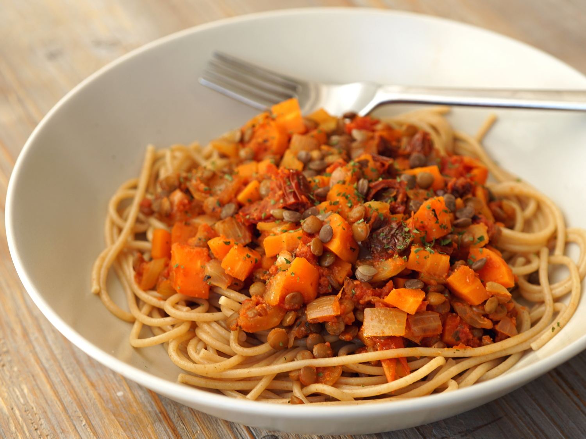

Heartwarming Sundried Tomato and Lentil Pasta

Description
This dish is ideal for nights when you're tired from work. It is quick, easy, and doesn't require much thought. Recipe serves two people.
Ingredients
- 250g Spaghetti (Use wholegrain for extra protein and fibre)
- 1 Tin of Green Lentils
- 1 Jar of Sundried tomato paste (I use the Sainsbury's offering)
- 1 tsp Balsamic Vinegar
- Table Salt (fine, not coarse)
- 1/2 tsp Garlic powder
- 1/2 tsp Onion powder
Note: This recipe assumes you have a colander or sieve to drain the pasta and lentils.
Steps
- Add two pinches of salt to a pot of water and bring to a boil.
- Add pasta and begin to cook in accordance with packet instructions, or to your liking.
- Whilst the pasta is cooking, drain the lentils and set aside
- Fill kettle with 250ml of water and pre-boil in case more water needs to be added to saucepan later.
- Add lentils to the pot 3 mins from time of pasta being finished. This is where that extra bit of water can come in handy. If you need to add more water, make sure to re-boil it before adding it to the pot. Note: you can cook the lentils in a separate pot if you like. If you choose to do so, cook the lentils at a moderate heat for 4-5 mins.
- Lower heat to medium, then drain pasta and lentils
- Add 8-10 tsp of sundried tomato paste, 1/2 tsp garlic powder, 1/2 tsp onion powder, salt to liking (if you're not sure how much, start with two pinches), and 1 tsp balsamic vinegar (add more if needed). Mix all together and wait for paste to become hot.
- Add pasta and lentils back into pan and stir.
- Taste test, add more salt if needed, and serve.